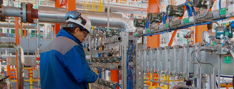

A quienes se decidan estudiarla, me gustaría decirles que esta carrera les brindará muchas posibilidades de desarrollo y les permitirá desempeñarse en múltiples ámbitos de la actividad económica, ya que otorga una sólida formación académica que permite interactuar con otras ramas de la ingeniería con facilidad y seguridad.
Lopez Beuret Gerardo
Ingeniero Electromecánico
Mi nombre es Gerardo López Beuret. Soy oriundo de Mendoza y actualmente trabajo en la Dirección de Ingeniería como jefe de Proyectos. Si bien mi lugar de trabajo está en la Ciudad de Buenos Aires, los proyectos en los que intervengo se encuentran distribuidos por todo nuestro país.
Como ingeniero electromecánico (UTN) tengo un amplio campo de acción en la actividad petrolera y el ámbito del negocio de la empresa. Este fue uno de los motivos por los cuales elegí esta carrera, que cuenta con la flexibilidad de tener un amplio espectro en dos especialidades claves de la ingeniería. Así tuve la posibilidad de continuar aprendiendo y capacitándome continuamente a lo largo de mis 24 años en la profesión.
Dentro de la doble especialidad con la que egresé, me especialicé en profundidad en la gestión de proyectos y particularmente en grandes proyectos relacionados con la eficiencia energética, en los que pude aplicar cada uno de los conceptos recibidos en la Universidad más los que da la diaria actuación en la vida profesional y la capacitación continua.
A quienes se decidan estudiarla, me gustaría decirles que esta carrera les brindará muchas posibilidades de desarrollo y les permitirá desempeñarse en múltiples ámbitos de la actividad económica, ya que otorga una sólida formación académica que permite interactuar con otras ramas de la ingeniería con facilidad y seguridad.
La versatilidad de la carrera nos permite desempeñar diversos roles dentro de la industria.
Me parece que el aspecto más importante del paso por la facultad es que te brinda las herramientas para desarrollar un criterio propio.

Yamila Eberhardt, 30 Años
Ingeniera Química
Estudié Ingeniería Química en la UTN, en la regional La Plata y después hice el posgrado de Ingeniería Laboral en esa misma universidad. Decidí estudiar Ingeniería Química porque me interesaban muchísimo los procesos y porque en la UTN la carrera está orientada hacia la industria. Actualmente trabajo en la Gerencia de Procesos y Especialidades de la Dirección de Ingeniería, donde realizo tareas asociadas a la instrumentación y control de procesos.
La versatilidad de la carrera nos permite desempeñar diversos roles dentro de la industria.
Me parece que el aspecto más importante del paso por la facultad es que te brinda las herramientas para desarrollar un criterio propio. Te ofrece los conceptos básicos para comenzar la actividad laboral, pero lo más importante viene después, cuando tenés que adaptar ese conocimiento a las necesidades concretas del trabajo. Yo creo que con formación continua y esfuerzo, los ingenieros químicos podemos superar los encasillamientos y desempeñarnos en una multiplicidad de roles.
Desde hace cinco años trabajo en la Dirección de Ingeniería de YPF. Audito técnicamente los documentos de las ingenierías de los proyectos, doy soporte técnico en documentos claves y verifico que los estándares de la ingeniería y las normativas que tenemos establecidas se apliquen.

Rosa De Los Ángeles Zapata, 53 años
Ingeniera Mecánica
Desde hace cinco años trabajo en la Dirección de Ingeniería de YPF. Audito técnicamente los documentos de las ingenierías de los proyectos, doy soporte técnico en documentos claves y verifico que los estándares de la ingeniería y las normativas que tenemos establecidas se apliquen.
Estudié en la Universidad Metropolitana de Caracas. Inicialmente me inscribí en Ingeniería Eléctrica porque me gustó mucho la física del último año de bachillerato, los circuitos y las ondas me fascinaron. Con el tiempo me empezó a gustar mas la física mecánica, resistencia de materiales, mecánica de fluidos y me cambié a Mecánica, que para mí es la más completa de todas las ingenierías. Durante la carrera ves de todo: química, temas de fuerzas, de electricidad, de ondas y electrónica, de control y me imaginé que tenía un mayor campo de trabajo.
A finales de los 70, cuando yo estudiaba, el tema de la energía estaba en la tapa de los periódicos, subió mucho el precio del petróleo y me empezaron a interesar las energías alternativas, ir más a la raíz de la generación de la energía.Creo que lo más importante que me dio la universidad es la capacidad de razonamiento y análisis. ¿Cómo hacer esto? ¿cómo mejorarlo, optimizarlo, hacerlo en menor tiempo? En ninguno de mis trabajos tuve que aplicar una receta, la receta siempre había que inventarla. Eso es lo que más me gusta de mi trabajo de todos los días, siempre surge algo nuevo y hay que ingeniársela, eso somos los ingenieros y eso nos da satisfacción.
En la Argentina hay pocos ingenieros, mucho menos electricistas, y el ámbito de aplicación es muy amplio porque podés trabajar en proyectos específicos de infraestructura eléctrica como en cualquier otro proyecto multidisciplinario.
Ignacio L. Pelizzari, 36 años
Ingeniero Electricista
Mi nombre es Ignacio Pelizzari, tengo 36 años y soy ingeniero electricista. Elegí esta carrera, que estudié en la UTN, porque preferí empezar por una ingeniería específica y hacer después un máster generalista, de Dirección de Empresas, en la Universidad del Salvador.
En la Argentina hay pocos ingenieros, mucho menos electricistas, y el ámbito de aplicación es muy amplio porque podés trabajar en proyectos específicos de infraestructura eléctrica como en cualquier otro proyecto multidisciplinario.
Yo trabajo como gerente de Proyecto en la Dirección de Ingeniería gestionando proyectos de inversión con la participación de muchas disciplinas (mecánica, eléctrica, electrónica, química). Tengo una oficina en la Torre YPF Puerto Madero, que es un lugar muy agradable, pero además viajo frecuentemente a las refinerías de La Plata y Luján de Cuyo porque es muy importante poder visitar las obras que realizamos.
El estudio de una carrera como ingeniería te ayuda a tener un enfoque de análisis de resolución de problemas, te permite tomar decisiones basadas en un sustento técnico y te ayuda a entender y priorizar el trabajo diario.
Lo especial de la ingeniería electrónica aplicada a la instrumentación y control de procesos es que permite centrarse en las cuestiones técnicas particulares de la carrera pero a la vez estar muy vinculado con el resto de los aspectos y tener así una visión global de cada proyecto.

Franco Spizirri, 33 años
Ingeniero Electrónico
Soy ingeniero electrónico, hice la orientación Control de Procesos en la Universidad Nacional de La Plata y actualmente trabajo en la Dirección de Ingeniería de YPF.
Lo que aprendí en la universidad me sirve de fundamento teórico para entender, seleccionar y diseñar diferentes tipos de tecnologías de aplicación a los proyectos que desarrollamos en la industria del petróleo. Todo esto se complementa de manera constante con el trabajo interdisciplinario que desarrollamos con profesionales de otras carreras, principalmente de ingeniería química, mecánica y eléctrica.
Lo especial de la ingeniería electrónica aplicada a la instrumentación y control de procesos es que permite centrarse en las cuestiones técnicas particulares de la carrera pero a la vez estar muy vinculado con el resto de los aspectos y tener así una visión global de cada proyecto.
¿Qué es explorar la tierra? ¿Cómo está compuesta? ¿Se puede predecir su comportamiento y cómo? Estas fueron las preguntas iniciales. Hoy por hoy, todos podemos observar la Tierra desde el espacio en google pero eso no alcanza para comprender realmente el por qué de las formas de las montañas, los valles y menos aún para saber qué existe debajo de la superficie.
Mario R. Atencio
Licenciado en Geofísica
Me crié en San Juan, una zona con actividad sísmica donde la tierra, cada tanto, nos avisa que está presente y que posee una fuerza más allá de lo que pudiéramos entender. Creo que este fue el puntapié con el que se inició mi vocación, la intriga por conocer la tierra, tan simple como poder reconocer y entender sobre qué estoy parado.
¿Qué es explorar la tierra? ¿Cómo está compuesta? ¿Se puede predecir su comportamiento y cómo? Estas fueron las preguntas iniciales. Hoy por hoy, todos podemos observar la Tierra desde el espacio en google pero eso no alcanza para comprender realmente el por qué de las formas de las montañas, los valles y menos aún para saber qué existe debajo de la superficie. Esas preguntas me llevaron a estudiar Geofísica y los métodos que investigan la tierra por debajo de la superficie.
Lo bueno de la Licenciatura en Geología es que te habilita para trabajar en ámbitos y temáticas variadas, como la exploración y explotación de petróleo, agua subterránea, minería y medio ambiente, ya sea desde la investigación científica o en la actividad privada. Si tuviera que volver a elegir una profesión, volvería a elegir ser geóloga.

Alina Crincoli, 38 años
Licenciada en Geología
Siempre me gustaron las carreras relacionadas a las Ciencias Naturales. Cuando terminé la secundaria consulté la Guía del Estudiante y me decidí por Geología porque reunía todas las características de lo que estaba buscando. Geología estudia el interior y el exterior de la Tierra; los materiales que la componen; la evolución que ha sufrido; las formas del relieve, los materiales que lo constituyen y los agentes que lo modifican; el ciclo hidrológico; oceanografía; entre otros temas. Es una carrera a la que hay que dedicarle mucho tiempo, todas las materias son anuales y la mayoría se aprueba por final. Durante la cursada se realizan numerosos viajes de estudio que te permiten ver los ejemplos del libro en el campo; ¡son experiencias inolvidables!
Actualmente trabajo en el grupo de Medio Ambiente de la Dirección de Ingeniería, y lo hago hace tres años. Tuve la oportunidad de participar en proyectos de caracterización y remediación ambiental, tanto en Argentina como en Estados Unidos. La misión de mi puesto actual es contribuir activamente con soporte técnico especializado en los proyectos de ingeniería. Mi trabajo me permite interactuar con otros profesionales, sobre todo ingenieros, y aprender de los diferentes aspectos que se deben evaluar en un mismo proyecto. Lo bueno de la Licenciatura en Geología es que te habilita para trabajar en ámbitos y temáticas variadas, como la exploración y explotación de petróleo, agua subterránea, minería y medio ambiente, ya sea desde la investigación científica o en la actividad privada. Si tuviera que volver a elegir una profesión, volvería a elegir ser geóloga.